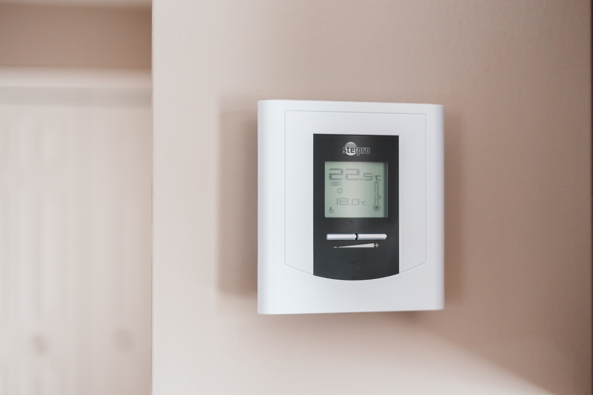

Venha ser voluntário no Instituto Schneider
Envie seu projeto!
Verifique se seu projeto tem elegibilidade para receber verba da Schneider!

Treinamento em Empreendedorismo

Hoje fiz petiscos ecológicos para os meus gatos

Aprendi uma receita de biscoito de carne fenomenal ao invés comerciais cheios de conservantes, você pode fazer seus próprios biscoitos de carne para gatos. Use carne moída orgânica, como carne de frango ou carne de peru. Misture com um pouco de farinha de trigo integral e água para formar uma massa. Modele pequenos biscoitos e asse no forno até que fiquem crocantes. Certifique-se de que a carne esteja completamente cozida antes de oferecer ao seu gato.

Essa semana comecei a tomar banhos mais ecológicos
Aqui temos 3 dicas que me ajudaram muito:
1. Reduza o tempo de banho: Diminuir o tempo que você passa no chuveiro é uma das formas mais
simples e eficazes de economizar água. Tente encurtar seus banhos, limitando o tempo de banho a
cinco minutos ou menos. Isso reduzirá significativamente o consumo de água.
2. Instale um redutor de vazão ou chuveiro econômico: Utilize dispositivos como redutores de
vazão ou chuveiros de baixo fluxo para limitar a quantidade de água que sai do chuveiro. Esses
equipamentos ajudam a reduzir o consumo de água durante o banho sem comprometer o seu conforto.
3. Reaproveite a água: Ao tomar banho, você pode coletar a água que escorre enquanto espera
que a temperatura se ajuste. Coloque um balde ou recipiente no chão do chuveiro para recolher essa
água e use-a posteriormente para regar plantas, lavar o chão ou dar descarga no vaso sanitário. É
uma forma inteligente de aproveitar a água que seria desperdiçada.
Aqui uma receita de doce que aproveita casca de banana!
A casca de banana pode ser aproveitada de maneira criativa na cozinha, inclusive para fazer doces
deliciosos. Aqui está uma receita simples de doce de casca de banana que você pode experimentar:
Ingredientes:
- Casca de 4 bananas maduras
- 1 xícara de açúcar
- Suco de 1 limão
- 1 xícara de água
- Canela em pau (opcional)
 Instruções
Instruções
- Lave bem as cascas de banana e remova qualquer sujeira ou resíduo. Corte as cascas em pedaços pequenos.
- Em uma panela, adicione as cascas de banana cortadas, o açúcar, o suco de limão e a água. Se desejar, adicione um pedaço de canela em pau para dar um sabor extra.
- Leve a panela ao fogo médio e deixe ferver. Em seguida, reduza o fogo para médio-baixo e cozinhe por cerca de 30 a 40 minutos, mexendo de vez em quando. As cascas de banana devem ficar macias e a calda deve engrossar.
- Retire a canela em pau, se utilizada, e deixe o doce de casca de banana esfriar um pouco. Transfira o doce para um liquidificador ou processador de alimentos e bata até obter uma consistência de purê. Se preferir, você pode deixar alguns pedaços maiores para uma textura mais rústica.
- Volte o doce à panela e leve ao fogo baixo por mais alguns minutos, mexendo sempre, para dar o ponto final.
- Desligue o fogo e deixe o doce esfriar completamente antes de transferir para um pote de vidro com tampa. Armazene na geladeira.
- O doce de casca de banana pode ser consumido puro, como acompanhamento para pães, torradas ou até mesmo como recheio de bolos e tortas. É uma forma criativa de aproveitar as cascas de banana, reduzindo o desperdício alimentar.
Meu ponto de vista sobre casas inteligentes
O custo de uma casa inteligente ecológica pode variar significativamente, dependendo de diversos fatores, como o tamanho da casa, o nível de automação desejado, os recursos de eficiência energética implementados e a região onde a construção ocorre. Além disso, o preço também pode ser influenciado pelos materiais de construção escolhidos, a contratação de profissionais especializados e as tecnologias específicas incorporadas ao projeto. Em geral, uma casa inteligente ecológica pode envolver investimentos adicionais em comparação com uma construção convencional devido às tecnologias e soluções sustentáveis empregadas. É possível que os custos iniciais sejam mais altos, mas podem ser compensados ao longo do tempo por meio da redução de despesas com energia e água. Embora seja difícil fornecer um valor exato, estima-se que o custo de uma casa inteligente ecológica possa variar de algumas dezenas de milhares de dólares até centenas de milhares de dólares, dependendo do escopo do projeto. É recomendado consultar profissionais da área, como arquitetos, construtores e especialistas em automação residencial, para obter estimativas mais precisas com base nas suas necessidades e localização geográfica. Lembre-se de considerar o retorno do investimento a longo prazo, bem como os benefícios ambientais e econômicos que uma casa inteligente ecológica pode proporcionar. Além disso, existem incentivos fiscais e programas de financiamento sustentável disponíveis em algumas regiões, que podem ajudar a reduzir os custos e tornar a construção mais acessível.

Sustentabilidade no Cinema
A sustentabilidade no cinema refere-se à adoção de práticas ecológicas e socialmente responsáveis em
todas as etapas da produção cinematográfica, desde a pré-produção até a pós-produção e distribuição.
Isso envolve minimizar o impacto ambiental da produção, promover a conscientização sobre questões
sociais e ambientais por meio das narrativas, e inspirar mudanças positivas na indústria do
entretenimento e na sociedade em geral. Aqui estão algumas maneiras pelas quais a sustentabilidade
pode ser incorporada ao cinema:
- Práticas de produção ecológicas: As produções podem adotar medidas para reduzir o consumo de energia, água e recursos naturais, bem como minimizar a geração de resíduos. Isso inclui o uso de fontes de energia renovável, redução do uso de plásticos descartáveis, reciclagem e reutilização de materiais, e escolha de locações que tenham menor impacto ambiental.
- Transporte consciente: A minimização das emissões de carbono relacionadas ao transporte é fundamental. As equipes de produção podem optar por veículos elétricos ou híbridos e incentivar o uso de transportes públicos sempre que possível.
- Alimentação sustentável: Durante as filmagens, escolher alimentos orgânicos e locais para a equipe pode ajudar a reduzir a pegada de carbono e apoiar a agricultura sustentável.
- Cenografia e figurino: A reutilização de adereços, cenários e figurinos pode reduzir a necessidade de produção de novos materiais, diminuindo o desperdício e o consumo de recursos.
- Conscientização nas narrativas: Filmes podem abordar temas relacionados à sustentabilidade, como mudanças climáticas, conservação da natureza, justiça social e direitos humanos. Essas narrativas podem aumentar a conscientização do público sobre questões críticas e inspirar ação.
- Distribuição e exibição sustentável: A distribuição digital de filmes tem um menor impacto ambiental em comparação com as cópias físicas. Além disso, teatros e festivais de cinema podem adotar práticas mais sustentáveis, como a redução do uso de papel para ingressos e materiais promocionais.
- Conscientização e responsabilidade social: Filmes e equipes de produção podem colaborar com organizações sem fins lucrativos e instituições de caridade que trabalham em prol da sustentabilidade e da justiça social. Isso pode envolver doações, parcerias e campanhas de conscientização.
- Educação e engajamento: Os cineastas podem usar seu trabalho para educar o público sobre questões ambientais e sociais, incentivando a reflexão e a ação. Isso pode ser feito por meio de documentários, filmes educativos e histórias envolventes.

Minhas lições de 6 meses de compostagem

A compostagem é um processo natural que transforma resíduos orgânicos em composto orgânico rico em
nutrientes para o solo. Aqui estão as etapas básicas para fazer compostagem em casa:
- Escolha um local: Encontre um local adequado em seu jardim ou quintal para montar uma pilha de compostagem ou use uma composteira específica. Certifique-se de que o local tenha boa drenagem e acesso fácil.
- Separe os resíduos: Separe os resíduos orgânicos da sua cozinha, como restos de frutas e legumes, borra de café, cascas de ovos, entre outros. Evite adicionar resíduos de origem animal, como carne e laticínios, pois podem atrair animais indesejados.
- Adicione materiais secos: Acrescente materiais secos, como folhas secas, palha, serragem ou papel picado, para ajudar a equilibrar a umidade e fornecer aeração à pilha. É importante manter uma proporção equilibrada de resíduos verdes (ricos em nitrogênio) e materiais secos (ricos em carbono) para um processo eficiente de compostagem.
- Misture os materiais: Misture os resíduos orgânicos com os materiais secos em camadas alternadas para garantir uma boa mistura. Você pode usar um garfo de jardim ou uma pá para ajudar na mistura. Mantenha a umidade adequada: A pilha de compostagem deve estar úmida, como uma esponja úmida, mas não encharcada. Se estiver muito seca, adicione um pouco de água. Se estiver muito úmida, adicione mais materiais secos para absorver o excesso de umidade.
- Vire a pilha: Para acelerar o processo de compostagem, vire a pilha a cada duas semanas aproximadamente. Isso ajuda a aerar a pilha e acelera a decomposição dos resíduos.
- Aguarde o processo: A compostagem leva tempo e pode variar de algumas semanas a vários meses, dependendo das condições e do tipo de resíduos utilizados. O composto estará pronto quando tiver uma aparência escura e ter uma textura semelhante a um solo rico e cheirar a terra.
- Use o composto: O composto orgânico pode ser usado em seu jardim como um fertilizante natural para enriquecer o solo. Aplique-o nas plantas, misturando-o suavemente no solo ou use-o como cobertura na superfície.
- Lembre-se de que a compostagem requer paciência e cuidados adequados. Evite adicionar resíduos não orgânicos, como plástico e metal, à pilha de compostagem. Também é importante não adicionar plantas doentes ou sementes de ervas daninhas, pois elas podem se espalhar pelo composto. Com um pouco de dedicação, você poderá aproveitar os benefícios da compostagem e reduzir a quantidade de resíduos orgânicos enviados para aterros sanitários.